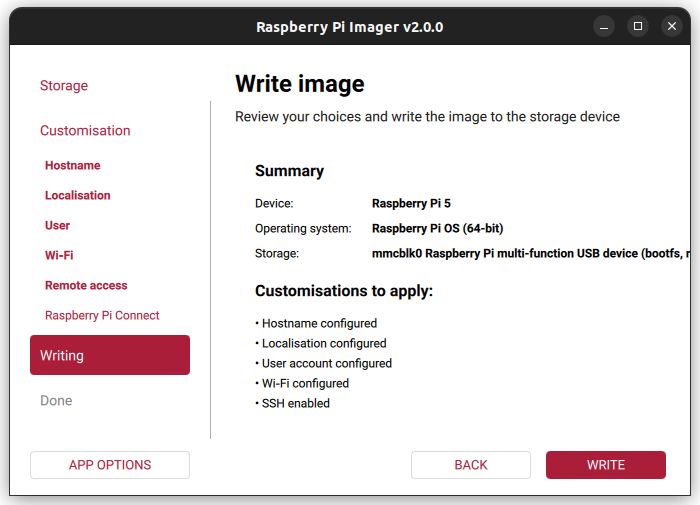

Setup¶
To flash the eMMC on a Raspberry Pi Compute Module, the following components are required:
- Host device: A computer running Linux, Windows, or macOS
- Micro USB cable
- Raspberry Pi Compute Module with a compatible carrier board
Set up the Board¶
- To disable eMMC boot on the Raspberry Pi: Set the nRPI_BOOT pin to HIGH using the 8-pin DIP switch on the board (typically the 3rd switch).
- Connect the board to the host device using a Micro USB cable.
Set up the Host Device¶
Note
The steps below follow the official Raspberry Pi documentation without modification. Reference: Raspberry Pi – eMMC flashing documentation
- Install the rpiboot tool (or build it from source):
sudo apt install rpiboot - Connect the IO Board to power.
- Run rpiboot:
sudo rpiboot - After a few seconds, the Compute Module will appear as a USB mass storage device.
- Check
/dev/(commonly/dev/sdaor/dev/sdb) - Alternatively, run lsblk and identify the device matching the module’s storage size.
- Check
- Download the Windows installer for rpiboot or build it from source.
- Run the installer. (Do not close any driver installation windows during setup.)
- Reboot the system.
- Connect the IO Board to power. Windows will automatically detect the hardware and install required drivers.
- For CM4 and newer devices:
- Select “Raspberry Pi – Mass Storage Gadget – 64-bit” from the Start Menu.
- The eMMC or NVMe device will appear as a USB mass storage device.
- A serial debug console is also exposed.
- For CM3 and older devices:
- Run RPiBoot.exe.
- The Compute Module eMMC will appear as a USB mass storage device.
- Build rpiboot from source.
- Connect the IO Board to power.
- Run the rpiboot executable from the terminal:
rpiboot -d mass-storage-gadget64 - When prompted with “The disk you inserted was not readable by this computer.” Click Ignore.
- The Compute Module eMMC will now appear as a USB mass storage device.
rpiboot
The output of the sudo rpiboot command should appear as expected. If it remains stuck at Waiting for BCM2835/6/7/2711/2712...,
install rpiboot from source..

Raspberry Pi Imager¶
- Launch the Raspberry Pi Imager application.
- Select Raspberry Pi 5 as the target board.

- Choose the operating system; Raspberry Pi OS (64-bit) is recommended.

- As the storage device, select the Raspberry Pi eMMC detected by your computer.

- In the advanced settings section, configure: Username, Hostname, Wi-Fi credentials, SSH access

- Start the flashing process by clicking
Writeand wait until it completes.

Note
- After the installation is completed, make sure to set pin 3 on the 8-pin DIP switch back to the LOW state.
- Before performing this step, power off the device.
- Disconnect the Micro USB cable.
- Set pin 3 of the DIP switch to the LOW position.
- Finally, reconnect the power supply to restart the system.